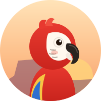
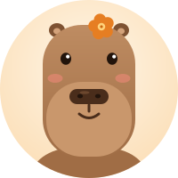
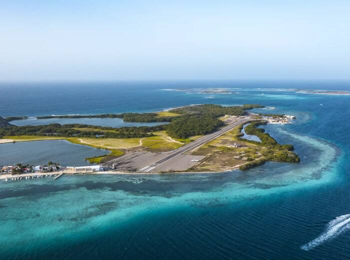
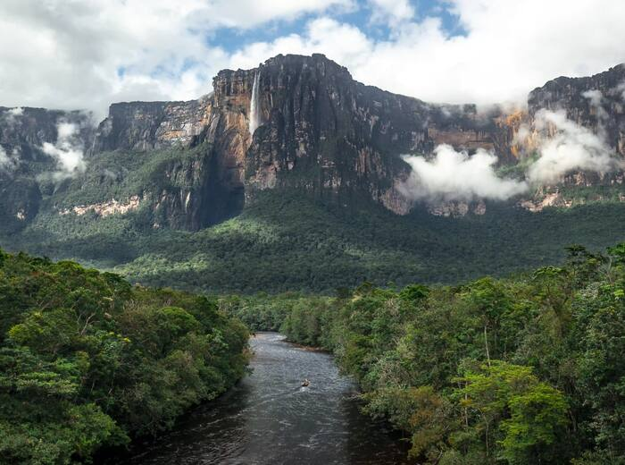
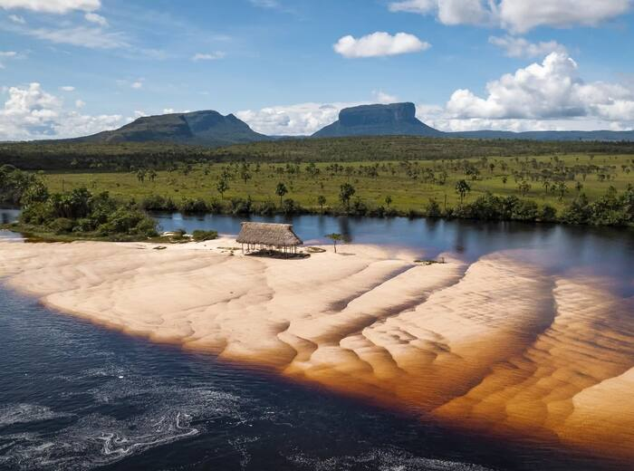
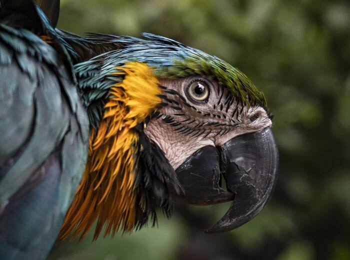
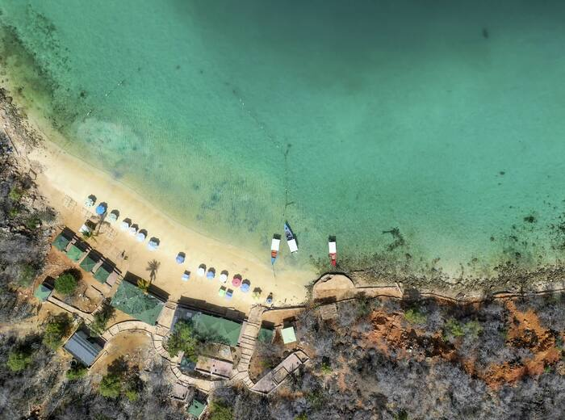
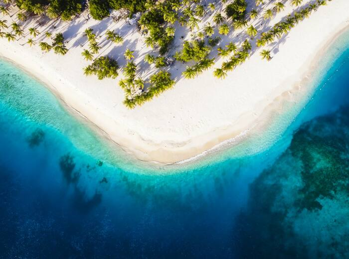
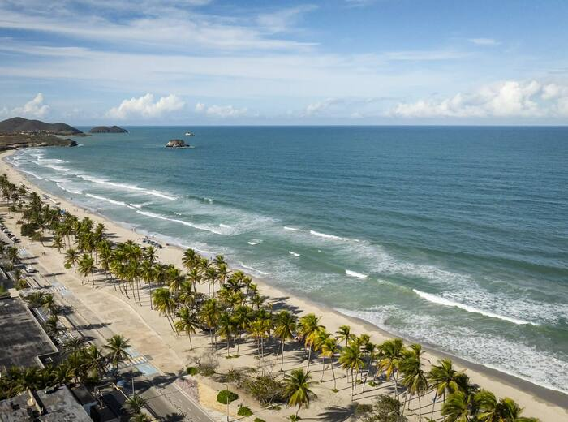
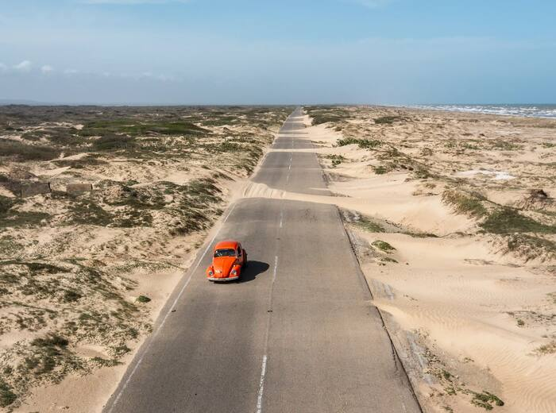

De Los Roques a los tepuyes, de los Andes a Margarita. Encuentra posadas familiares revisadas una a una, compara fotos y precios, y paga exactamente el precio publicado.
Se acabó buscar posadas por Instagram, esperar respuestas por WhatsApp y transferir sin garantías. Todo lo que necesitas, en un solo lugar.
Sin comisiones ni cargos ocultos para el viajero.
Nuestro equipo revisa cada posada, sus fotos y su anfitrión antes de publicarla.
Zelle, Pago Móvil, transferencia o efectivo, según acepte cada posada. Puedes filtrar por método de pago.
Hablas con el posadero dentro de RESER-VE. Todo queda registrado y vigilado contra estafas.
Solo opinan huéspedes que de verdad se alojaron con una reserva confirmada.
Busca por destino, región, precio o forma de pago y ubica cada posada en el mapa.

Aurora es la guacamaya viajera de RESER-VE. Cuéntale qué viaje sueñas, cuántos días y tu presupuesto, y te arma la ruta con posadas reales, fechas y precios. Pruébala en reser-ve.com/aurora.

El chigüire del botón naranja responde tus preguntas al momento y, si hace falta, te conecta con una persona del equipo.
Playas de agua turquesa, tepuyes milenarios, páramos andinos y pueblos coloniales. En muchos de estos lugares no hay grandes hoteles: la posada es la mejor forma de quedarse.








Elige posada, fechas y huéspedes y envía tu solicitud. No se cobra nada en ese momento.
El posadero confirma en menos de 24 horas y te llega un correo.
Recibes sus datos de pago por el chat de RESER-VE (Mensajes): Zelle, Pago Móvil, transferencia o efectivo, según la posada.
Pagas al posadero y coordinas tu llegada por el mismo chat.
Disfrutas tu estancia y luego dejas tu reseña ⭐ para ayudar a otros viajeros.
En Mis reservas ves el estado de cada reserva y puedes cancelar una solicitud mientras esté pendiente. En Mi cuenta cambias tu contraseña o eliminas tu cuenta.
Crear tu cuenta gratis y guardar posadas en Favoritos.
Explorar en reser-ve.com/buscar con el mapa.
Soñar tu viaje con Aurora en reser-ve.com/aurora.
Crea tu cuenta gratis, guarda tus posadas favoritas y entérate antes que nadie cuando abramos las reservas.
Crear mi cuenta → reser-ve.com